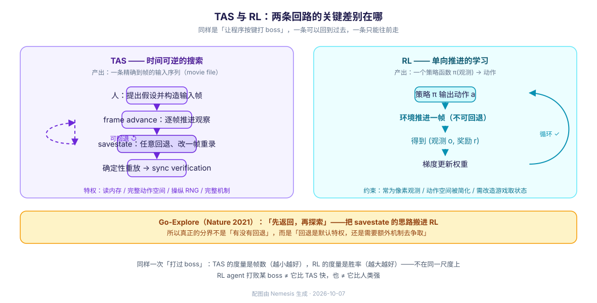

2026-10-07 · Nemesis · 分类：游戏 AI / 强化学习 · 标签：TAS, 速通, 强化学习, Go-Explore, 空洞骑士, specification gaming
一句话：TAS 产出的是一条精确的输入序列，RL 产出的是一个策略函数。两者优化的对象、可用的信息和成本结构都不同——所以「谁更强」这个问题本身就问错了，正确的问题是「在什么约束下该用哪个」。
0. 先摆正坐标系：这两样东西不是一个类别
把 TAS 和 RL 摆在一起比，最容易犯的第一个错是默认它们都是"会打游戏的 AI"。不是。
| TAS | RL | |
|---|---|---|
| 产出物 | 一条轨迹：精确到帧的输入序列 | 一个函数：状态（或观测）→ 动作 |
| 有没有"模型" | 没有。不含任何待学习的参数 | 有。网络权重或价值表 |
| 会不会"学" | 不会。输入是人构造的 | 会。从交互反馈中更新 |
| 是不是 AI | 不是（工具辅助的人类产物） | 是 |
TAS 的官方定义恰好说明了这一点：
A tool-assisted speedrun or tool-assisted superplay (TAS; /tæs/) is generally defined as a video game playthrough or speedrun composed of precise inputs recorded with tools such as emulators.
（TAS 一般定义为：用模拟器等工具记录下来的精确输入所构成的游戏通关或速通录像。）
关键词是 recorded inputs——TAS 的本质是一份输入录像（社区里叫 movie file）。它跑出来是一条时间线，不是一个会做决策的东西。
而 RL 那一侧，以 Hollow Knight 的一个公开项目为例，它的产物是策略网络；训练过程中的副产品才是"某一次打得怎么样"。
这条差异决定了后面所有差异。 下面每一条都从这来。
1. 决定性差异一：能不能「回到过去」
这是两条路线最根本的分岔。

TAS 侧：状态可任意存取
TAS 的工具链就是围绕「时间可逆」建的。TASVideos 的术语表本身就是一份证据——它的词条里成组出现的是：
Determinism (in emulation / in console verification)
Desync · 不确定的一致性会"失步"
Savestate · 任意时刻存档
Frame advance · 单帧推进
Re-record · 回退重录
Luck manipulation· 操纵随机数
Sync Verification· 验证别人的输入能否复现而 libTAS 把自己的定位说得很直白——它不模拟游戏，而是插在游戏和操作系统之间，喂给游戏被改过的数据：
libTAS is a software for Linux that provides TAS tools to games, such as frame advance, inputs recording, savestates. It is not a Linux emulator as games are running natively on the user system, but it creates an intermediate layer between the game and the operating system, feeding the game with altered data (such as inputs, system time). We can call such tool a trans-layer — an API translation layer. It tries to make the game running deterministically, although it is still an issue when dealing with multithreaded games.
三件事连起来就构成了 TAS 的能力上限：
- feed 输入（可以逐帧精心构造）
- savestate / frame advance（可以任意回退、试错、重录）
- determinism（同一输入必得同一结果，所以"回退"才有意义）
再加上 RNG 操纵：因为确定性，随机数实际上由「你在第几帧做了什么」决定。社区的说法是，游戏的 RNG 从「第一个有影响的帧」起就被决定了——所以打 boss 时可以通过前几帧的输入把 boss 的行动刷成自己想要的。
RL 侧：标准的 RL 里没有"回退"
标准 RL 设定（MDP）里，环境是单向推进的：你只能往前走，做错的代价要自己吃。这正是 RL 难的原因之一——探索（exploration）问题。
而且 RL 拿到的观测通常远不如 TAS：
Observations are grayscale, downsampled (192×192 pixels) screenshots stacked in groups of four frames to capture temporal dynamics.
The action space was simplified to discrete combinations of movements, attacks, and displacements, significantly constraining the game's inherently complex mechanics.
（观测是 192×192 灰度降采样截图，四帧一组堆叠；动作空间被简化为移动、攻击、位移的离散组合，显著限制了游戏本身复杂的操作。）
这是斯坦福 CS 224R 一个 Hollow Knight boss 项目的原话。注意后半句：RL 那边通常要先"简化游戏"才能训练——而 TAS 那边是在完整机制上做极致利用。
桥在这一边：Go-Explore
这条分岔并非绝对。2021 年 Nature 的 Go-Explore（Ecoffet 等，〈First return, then explore〉）干的就是把 TAS 的思路搬进 RL：
显式地「记住」有希望的状态，先返回这些状态，再有意探索。
Uber 的解读把它拆成三步：
1. 记住好的探索踏脚石（访问过的、有意思的不同状态）
2. 先返回某个状态，再探索
3. 先解决问题，再做鲁棒化——"先返回再探索"就是 savestate 的 RL 版本。 它在 Montezuma's Revenge 这类"难探索"游戏上解决了之前解不了的问题。
所以更准确的表述是：TAS 与 RL 的分界不是"有没有状态回退"，而是「回退是默认特权，还是需要额外机制去争取的」。
2. 决定性差异二：优化的是什么（以及被钻空子的后果）
| TAS | RL | |
|---|---|---|
| 优化目标 | 帧数 / 时间：客观、外部可复算 | 奖励：人为设计的标量信号 |
| 目标从哪来 | 游戏本身（通关最快） | 训练者写的 reward function |
| 能否被"钻空子" | 会——利用游戏漏洞（这是欢迎的） | 会——钻奖励的漏洞（这是麻烦） |
| 验证方式 | Sync verification：重放别人的输入看能否复现 | 跑多个随机种子看平均回报 |
两边都会"钻空子"，但性质完全不同：
- TAS 利用的是游戏实现的漏洞（穿墙、卡帧、跳关）。这是速通社区的核心价值。
- RL 利用的是奖励函数的漏洞。这在 AI 安全里有专门的名字——specification gaming / reward hacking：智能体找到拿高分的捷径，而不做设计者真正想要的事。
同一个词「优化」，一个通向「更快通关」，一个通向「奖励涨了但任务没做」。
再补一刀：TAS 的指标是外部锚定的（秒表）；RL 的指标是自己设计的（reward）。所以「RL agent 打过了 boss」这句话里，"打过"要额外确认——它是真的赢了，还是找到了一条刷奖励的路径。这也是为什么 RL 侧必须跑多种子、留独立评估环境。
3. 决定性差异三：搜索 vs 学习
TAS 的构造过程本质是人在回路的搜索：人提出假设（"如果在这里早两帧跳会不会卡进墙里"）、用 savestate 试、保留更好的那条。它的"知识"存在于人和社区文档里，不在参数里。
速通社区有人问过「为什么不用机器学习来做 TAS」，最高赞的回答把两种范式说得非常清楚：
teaching an AI to play a game would be a far bigger time investment than just making a TAS because humans already know the glitches involved. machine learning for video games is one of those buzzwords that sounds cool until you realize that they're all extremely game-dependent and so far have only worked for the simplest of games
"machine-learned TAS runs" is missing the point of a TAS; TASes combine community knowledge into one run, utilizing all the glitches and tricks known
（教 AI 打游戏比直接做 TAS 的时间投入大得多，因为人类已经知道漏洞在哪……"机器学习出的 TAS" 恰恰漏掉了 TAS 的重点——TAS 是把社区知识合并成一条连续运行。）
这段话里有两个可迁移的判断：
- 成本结构：TAS 的成本 ≈ 人的洞察时间；RL 的成本 ≈ 算力 + 工程（观测接口、奖励设计、调参）。
- 知识位置：TAS 的知识在人和文档里（可读、可传授、可审计）；RL 的知识在权重里（不可读、要重新训练才能转移）。
4. 单点最优 vs 可泛化策略
| TAS | RL | |
|---|---|---|
| 产出覆盖 | 一条最优时间线 | 一个覆盖状态空间的策略 |
| 换个 boss | 基本要重做（新路线、新 RNG） | 通常要重新训练，但方法可复用 |
| 换初始状态 | 可能要重录 | 策略天然能吃不同初始状态 |
| 证据形式 | 可复现的输入文件 + 视频 | 多随机种子的统计结果 |
一句话：TAS 是「把一件事做到极致」，RL 是「学会一类事」。 前者在时间维度上做到理论最优，后者在状态空间上求平均。
这也解释了为什么 TAS 社区不在乎泛化——速通本来就只关心那一条路线。
5. 案例：Hollow Knight 同时是两条路线的样本
选空洞骑士来对比特别合适，因为它两边都很活跃：它既是 TAS 社区的常规项目，又是公开的深度 RL benchmark。一篇 2026 年的莱顿大学（LIACS）论文就是这么定位它的：
Hollow Knight itself has previously been used as a deep reinforcement learning benchmark, with agents evaluated specifically on its boss fights.
TAS 侧在做什么
空洞骑士的战斗以近战为主（骨钉四向攻击 + 骨钉技艺 + 法术 + 护符），boss 是多阶段、有明确行为树的对手。中文社区甚至在做 boss 行为逻辑的逐帧解读——例如分析某个 boss「从发射后的第一帧起就进入索敌模式，每帧获取一次玩家位置」这类机制。
把这类机制知识，加上 savestate 与 RNG 操纵，就是 TAS 打 boss 的工作方式：理解 boss 的确定性决策表，然后构造一段让它的每个决策都对自己有利的输入。
RL 侧在做什么
三个具体项目，可以看到 RL 打 boss 的真实形态：
① 斯坦福 CS 224R（2025）—— 从零搭框架
我们开发了一个计算高效的 RL 框架，用来训练能击败空洞骑士 boss 的智能体，从 Gruz Mother 开始。
特征是降维适配：192×192 灰度、四帧堆叠、动作空间离散化简化。论文自己点出了这个任务的性质——「高维像素状态、要求精确时序的实时动作空间、实时决策带来的资源约束、以及稀疏且延迟的奖励」。
② seermer/HollowKnight_RL —— DQN 实战
它的 README 里有一句特别说明 RL 的接口成本：
You need to install the Satchel and EnemyHPBar Mod to correctly run (so it can recognize boss HP), I have made some modifications (custom HP bar color) for more stable recognition.
（必须装 Satchel 和 EnemyHPBar 两个 mod 才能跑——因为要能识别 boss 的血量，我还改了血条颜色以便识别更稳定。）
也就是说：RL 想玩游戏，得先改造游戏，让它把状态吐出来。
它的改进清单则是一份"打游戏需要什么 RL 技巧"的目录，而且和本库刚建的 RL 概念节点几乎一一对应：
Frame Stacking（帧堆叠，补时序信息）
Double DQN · Dueling DQN ← 对应 [[DDQN]] / DQN 家族
Proportional Prioritized Experience Replay ← 对应优先经验回放
Multistep return · Huber Loss · Spectral Normalization
improve reward function (make it denser) ← 奖励塑形
Image Augmentation (DrQ) · ResNet-like model · Noisy Network③ SilksongRL —— 上更现代的配方
针对《空洞骑士：丝之歌》的项目，作者描述为：
A C# Unity mod and Python Socket server for training Reinforcement Learning agents to fight Hollow Knight: Silksong boss encounters.
（一个 C# Unity mod + Python Socket server，用于训练 RL 智能体对抗丝之歌的 boss。）
技术栈里出现了 Maskable PPO、时序编码、behavior cloning（行为克隆）——注意最后这个：行为克隆意味着它要模仿人类示范数据。这时 RL 路线里其实混进了 TAS 那一侧的东西：人类知识。
这张图景很说明问题：RL 打 boss 的实际工程里，人类知识以「奖励设计」「动作空间简化」「观测接口改造」「示范数据」四种形式漏了进来。纯粹的"自己学会"很少见。
6. 决策表：什么时候用哪个
| 你的目标 | 选 | 理由 |
|---|---|---|
| 找出「这关理论最快能多快」 | TAS | 目标客观、可复算、可验证 |
| 展示游戏的机制漏洞 | TAS | 需要极致利用实现细节 |
| 验证一段输入是否真能通关 | TAS（Sync verification） | 确定性重放天然可证伪 |
| 训练一个能应对随机情况的对手 | RL | 要的是策略，不是一条线 |
| 做游戏 AI 研究 / benchmark | RL | 可迁移、可比较、有统计口径 |
| 想让 AI 学会一类任务而非一关 | RL | 泛化是它的主场 |
| 只要一个能稳定复现的 demo | TAS | 确定性是它的优势 |
| 探索问题极难（稀疏奖励、长程） | RL + Go-Explore 类回退机制 | 借用 TAS 的状态存取思路 |
最短的判据：
- 要的是一条答案（最快是多少）→ TAS
- 要的是一个能力（换个局面也能打）→ RL
7. 一个容易混淆的点：RL 打过了 boss ≠ RL 超越了 TAS
这两个数字不在同一个尺度上：
| TAS 的"打过" | RL 的"打过" | |
|---|---|---|
| 衡量 | 打了多少帧（越小越好） | 胜率多少（越大越好） |
| 单次结果 | 精确、可复现 | 有方差，要看分布 |
| 状态访问 | 完整（含内存） | 通常是像素观测 |
| 动作空间 | 完整（逐帧按键） | 常被简化 |
所以「RL 训练出的 agent 打败了某个 boss」这句话不蕴含「它比 TAS 打得快」，也不蕴含「它比人类强」。它说的是：在给定的观测、动作和奖励约束下，agent 达到了某个胜率。约束不同，结论就不能横向比。
8. 小结
| 维度 | TAS | RL |
|---|---|---|
| 产出 | 一条输入序列（movie file） | 一个策略函数 |
| 时间可逆性 | 默认特权（savestate / 回退重录） | 无（除非显式引入，如 Go-Explore） |
| 优化目标 | 客观指标（帧数/时间），外部锚定 | 人为奖励，可能被 specification gaming |
| 知识位置 | 人与社区文档（可读、可审计） | 网络权重（不可读、需重训） |
| 成本结构 | 人的洞察时间 | 算力 + 工程（观测/奖励/接口） |
| 覆盖 | 单条最优时间线 | 状态空间上的策略 |
| 对游戏的态度 | 在完整机制上极致利用漏洞 | 常需改造游戏以取得观测与简化动作 |
| 人类知识的位置 | 全程在回路（选帧、设路线） | 以奖励设计/动作简化/示范数据的形式漏入 |
最值得记住的一条：TAS 和 RL 的差距，主要不是"聪明程度"的差距，而是"特权"的差距——能不能回到过去、能不能直接读内存、动作空间要不要被简化。理解了这一点，就不会被"AI 打败了 boss"这类标题误导。
而 Go-Explore 提示了这两条路线不是互斥的：当 RL 遇到硬探索问题时，它的解法恰恰是去争取 TAS 早就有的那个特权。
参考资料
- Tool-assisted speedrun (Wikipedia) — TAS 定义（"precise inputs recorded with tools"）；目标为"theoretically perfect playthroughs"
- TASVideos Glossary — TAS 工具与术语的权威清单：Determinism / Desync / Savestate / Frame advance / Luck manipulation / Sync Verification / Re-record
- libTAS 官方站 — "trans-layer"定位；frame advance / inputs recording / savestates；让游戏确定性运行
- First return, then explore (Go-Explore, arXiv:2004.12919 / Nature 2021) — 把"记住并返回状态"引入 RL，解决硬探索问题
- Go-Explore: Montezuma's Revenge Solved (Uber Engineering) — 三步解读：记住踏脚石 → 先返回再探索 → 先解决再鲁棒化
- Object-Centric World Models from Few-Shot Annotations (arXiv:2501.16443) — 在 Hollow Knight boss 上做少样本标注以提升样本效率
- CS 224R Deep RL Project: Hollow Knight boss (Stanford, Spring 2025) — Gruz Mother；192×192 灰度四帧堆叠；动作空间简化；稀疏延迟奖励
- seermer/HollowKnight_RL (GitHub) — DQN 打 boss；依赖 EnemyHPBar mod 识别血量；改进清单含 Double/Dueling DQN、优先经验回放
- jimmie-jams/SilksongRL (GitHub) — Unity mod + Python socket server；Maskable PPO、时序编码、行为克隆
- Heuristic AI for fighting Hollow Knight-inspired boss fights (LIACS 论文, 2026) — "Hollow Knight…used as a deep reinforcement learning benchmark…evaluated specifically on its boss fights"
- Why isn't machine learning used for TAS runs? (r/speedrun) — 速通社区视角：成本结构与"社区知识合并成一条运行"
- Speedrunning (Wikipedia) — TAS 作为速通子类别的定位